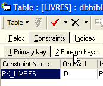
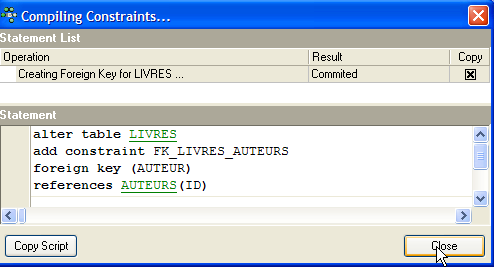
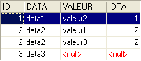

5. 表之间的关系
5.1. 外键
关系型数据库是由一系列通过关系相互关联的表组成的集合。让我们以之前的 [BIBLIO] 表为例，该表具有以下结构：

其内容示例如下：

您可能需要这些作品的作者信息，例如他们的名字、姓氏、出生日期和国籍。让我们创建这样一个表。右键单击 [DBBIBLIO / Tables]，然后选择 [New Table] 选项：

现在，让我们创建以下 [AUTHORS] 表：
 |  |
表的主键——用于唯一标识一行 | |
作者姓氏 | |
作者的名字（如适用） | |
出生日期 | |
原籍国 |
[AUTHORS] 表的内容可能如下：

让我们回到 [BIBLIO] 表及其内容：
在该表的 [AUTHOR] 列中，不再需要输入作者姓名。相反，最好输入 [AUTHORS] 表中分配给他们的 ID 号。 让我们创建一个名为 [BOOKS] 的新表。为此，我们将使用第 3.14 节中创建的 [biblio.sql] 脚本。我们通过 [脚本执行器，Ctrl-F12] 工具运行此脚本：

我们将创建 BIBLIO 表的脚本进行修改，以适应 BOOKS 表：
我们仅对更改部分进行说明：
- 第 4 行：表中的 [AUTHOR] 列变为整型。该数字引用了先前创建的 [AUTHORS] 表中的某位作者。
- 第11–19行：作者姓名已被其作者ID取代。
- 第 29 行：约束名称已更改。它之前名为 [UNQ1_BIBLIO]，现在名为 [UNQ1_LIVRES]。该名称可以是任意内容，但最好具有实际意义。此处并未做到这一点。数据库中针对不同字段和不同表的约束必须通过不同的名称加以区分。 请注意，第29行的约束要求表内标题必须唯一。
- 第 36 行：更改主键 ID 约束的名称。
让我们运行此脚本。如果成功，我们将得到以下新的 [BOOKS] 表：
 |  |
有人可能会疑惑，最终我们是否真的获得了什么。确实，[BOOKS] 表列出的只是作者编号而非姓名。由于作者数量多达数千，将一本书与其作者建立关联似乎很困难。幸运的是，SQL 可以帮到我们。它允许我们同时查询多个表。在此示例中，我们将展示一个 SQL 查询，用于检索图书馆中书籍的书名及其作者的信息。 让我们使用 SQL 编辑器（F12）执行以下 SQL 语句：
SQL> select LIVRES.titre, AUTEURS.nom, AUTEURS.prenom,AUTEURS.date_naissance
FROM LIVRES inner join AUTEURS on LIVRES.AUTEUR=AUTEURS.ID
ORDER BY AUTEURS.nom asc
现在解释这个 SQL 查询还为时过早。我们稍后会再回来讨论。该查询的结果如下：

每本书都已正确地与作者及其相关信息进行了匹配。
让我们总结一下刚才所做的工作：
- 我们有两张表，分别包含不同类型的信息：
- AUTHORS 表包含关于作者的信息
- BOOKS 表包含图书馆购买的书籍信息
- 这两个表之间存在关联。一本书必须有一位作者，甚至可能有多位作者。本文暂不讨论这种情况。在 [BOOKS] 表中，[AUTHOR] 字段引用了 [AUTHORS] 表中的一行。这种关系被称为“关联”。
[BOOKS] 表与 [AUTHORS] 表之间的关系实际上是一种约束：[BOOKS] 表中的每一行必须拥有一个在 [AUTHORS] 表中存在的作者 ID。 如果 [BOOKS] 表中某行拥有的作者 ID 在 [AUTHORS] 表中不存在，我们将面临一种异常情况，即无法找到该书的作者。
数据库管理系统（DBMS）能够确保该约束始终得到满足。为此，我们将向 [BOOKS] 表添加一个约束：
 |  |  |
连接 [BOOKS] 表中 [AUTHOR] 列与 [AUTHORS] 表中 [ID] 字段的关联称为外键关系。在上方的向导中，[BOOKS] 表中的 [AUTHOR] 字段被称为“外键”。 定义外键意味着表 [T1] 中列 [c1] 的值必须存在于表 [T2] 的列 [c2] 中。列 [c1] 被称为表 T1 在表 [T2] 列 [c2] 上的“外键”。 列 [c2] 通常是表 [T2] 的主键，但这并非强制要求。
我们如下定义表 [BOOKS] 针对表 [AUTHORS] 的 [ID] 字段的外键 [AUTHOR]：
 |
- 约束名称：free
- “外键”列，即此处的 [BOOKS] 表的 [AUTHOR] 列
- 被外键引用的表。在此，[BOOKS] 表中的 [AUTHOR] 列必须与 [AUTHORS] 表中的 [ID] 列中的某个值相对应。因此，[AUTHORS] 表是被引用的表。
- 外键引用的列。此处为 [AUTHORS] 表的 [ID] 列。
我们验证此约束：

如果一切顺利，则被接受：

这个新的外键约束会产生什么后果？使用 SQL 编辑器（F12），让我们尝试向 BOOKS 表插入一行数据，其中作者 ID 不存在：

上述 [INSERT] 操作试图插入一本作者 ID 不存在（100）的书。查询执行失败。相关的错误消息表明违反了外键约束“FK_BOOKS_AUTHORS”。这就是我们刚刚定义的那个。
5.2. 两个表之间的连接操作
仍留在 [DBBIBLIO] 数据库（或任何其他数据库）中，让我们创建两个名为 TA 和 TB 的测试表，并按以下方式定义它们：
表 TA
- ID：表 TA 的主键 - DATA：任意数据 |  |
表 TB
 - ID：TB表的主键 - IDTA：TB 表的外键，引用 TA 表的 ID 列。因此，TA 表 IDTA 列中的值必须存在于 TA 表的 ID 列中 - VALUE：任意数据 |  |
在 SQL 编辑器（F12）中，我们将执行同时使用 TA 和 TB 表的 SQL 语句。

该 SQL 语句使用 FROM 关键字来引用 TA 和 TB 两个表。FROM TA, TB 操作将导致创建一个新的临时表，其中 TA 表的每一行都会与 TB 表的每一行进行连接。因此，如果 TA 表有 NA 行，TB 表有 NB 行，则生成的表将有 NA × NB 行。如上图所示。 此外，每行都包含来自这两个表的列。以 [SELECT col1, col2, ... FROM ...] 形式指定的列顺序表明了应包含哪些列。在此，* 关键字表示请求生成表中的所有列。上述 SQL 语句生成的表有时被称为表 TA 和 TB 的笛卡尔积。
在上文中，表 TA 的每一行都与表 TB 的每一行进行了关联。通常，我们希望将 TB 中的某一行与表 TA 中与其存在关联关系的一行进行关联。这种关联关系通常以外键约束的形式体现。本例即属此类。对于表 TA 中的某一行，我们可以将其与表 TB 中满足关系 TB.IDTA=TA.ID 的行进行关联。查询此关系有多种方法：
上述 SQL 语句与前一个类似，但有两点不同：
- TA 与 TB 的笛卡尔积结果行通过 WHERE 子句进行过滤，该子句仅将满足关系 TB.IDTA=TA.ID 的 TB 表行与 TA 表中的行相关联
- 仅通过 [T.col] 语法请求特定列，其中 T 是表名，col 是该表中的列名。此语法可消除两张表中存在同名列时可能产生的歧义。当不存在此类歧义时，可使用 [col] 语法，无需指定该列所属的表。
结果如下：

使用以下 SQL 语句也可获得相同结果：
术语 [inner join] 衍生出了“内连接”这一名称，用于指代两张表之间的此类操作。我们将看到，还有一种“外连接”。在内连接中，查询中表的顺序对结果没有影响：FROM TA inner join TB 等同于 FROM TB inner join TA。
前面的 SQL 语句仅将表 TB 中至少有一行引用的表 TA 中的行包含在结果集中。因此，TA 中的行 [3, data3] 不会出现在结果中，因为它没有被 TB 中的任何一行引用。您可能希望获取 TA 中的所有行，无论它们是否被 TB 中的行引用。在这种情况下，您需要在两个表之间使用左外连接：

这里我们使用了一个左外连接。要理解“FROM TA left outer join TB”这一术语，可以想象一个连接操作，其中 TA 表位于左侧，TB 表位于右侧。左外连接的结果集中包含左侧表的所有行，即使其中某些行不满足连接条件。该连接条件不一定是外键约束，尽管这是最常见的情况。
按以下顺序：
TB 表位于外连接的“左侧”。因此，TB 表中的所有行都会出现在结果集中：

与内连接不同，此处的表顺序很重要。此外还有右外连接：
- FROM TA LEFT OUTER JOIN TB 等同于 FROM TB RIGHT OUTER JOIN TA：TA 表位于左侧
- FROM TB LEFT OUTER JOIN TA 等同于 FROM TA RIGHT OUTER JOIN TB：TB 表位于左侧
现在我们已经掌握了同时查询多个表的基础知识，可以继续学习更复杂的数据库查询了。